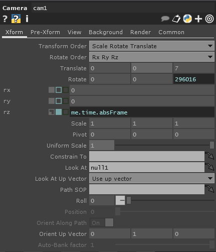

Matthew Ragan
Rendering | TouchDesigner
If you spend much time programming in TouchDesigner , eventually you’ll want to start doing some real-time rendering. When dealing with rendering some 3D geometry we need to get a few pieces of our network correctly set-up to get started. There are, of course, lots of different methods for rendering but we can get started with some rendering basics.
Like working in any rendering environment, we need a few things in place to actually draw an image. We need to have the actual object that we want to draw, we need a light source (not always, but for now let’s pretend), and we need to know where we are looking at the scene from. In TouchDesigner we can think of these elements in the following way:
Geometry Component – this is our object that we’re drawing. This component holds a Surface Operator (SOP), that is the object we are drawing.
Camera Component – this is the vantage point we are drawing out scene from.
Light Component – this is our light source for our scene. There are some cases where we don’t need a light, but it’s a good rule of thumb to assume that you’ll need to light your scene.
Render TOP – this texture operator is the drawing / video that is the result of your render set-up. This is the TOP that you’ll end up using in your network / performance / etc.
Using these three components and one operator, we end up with a basic network set-up that looks something like this:
At this point you’re probably familiar with patch cords (called wires in TouchDesigner’s official documentation) that connect operators within a single family (CHOPs, TOPs, SOPs, DATs, etc), but you may not be as familiar with the dotted lines with arrows that you see in the image above. These are called data links, and their visibility can be toggled on and off with the short cut key “x”. Unlike wires, data links help us see when operators from different families are connected in some way. We can also see if data is actively being passed through these connections – if the arrow head is moving, then new information is being passed, static arrows tell us that we’re not actively passing new data.
Let’s take a look at a quick example – here we can see that the Geo is constantly sending information to the render TOP. When we change the position of the camera Comp, we can see the arrow heads move. While this might not seem like something worth caring about in this very moment, there will surely come a day when you’re debugging a scene and the ability to quickly see what’s passing new data and what’s not will be the blessing that helps you keep your sanity.
Let’s take a moment to give our Render TOP a closer look. The Render TOP has five different pages of parameters, and while all of them are important we can start by looking at the Render Page and the Common Page.
The Render page contains all of the information about what components we’re currently using. Here we can see that we’re using cam1 as our Camera, * as our Geometry, and * as our Lights. What is this gibberish? Our Render TOP follows many of the pattern matching rules as the rest of TouchDesigner. In this case a * means, “any geometry component.” You can test this by adding another geo to your scene. You’ll see another set of data link lines drawn to the Render TOP, but you won’t see another torus. Why? Well, you won’t see another Torus because it’s being drawn in exactly the same dimensions in the same place.
At this point you could tell your Render TOP which Geo to use by typing in the name of the Geo component. For example, if we write “geo1” in our Geometry Field we’ll only see data links drawn from geo1 to our Render TOP.
Why do we care about this? This is useful as it has large scale implications for lots of different rendering situations – advanced lighting, camera actions, etc. This also gives you a way to divvy up rendering between TOPs and composite the video later.
In addition to the Render Page, we should also take a moment to look at the Common Page.
On the common page we can specify the resolution of our final image, as well as a few other parameters. Rendering can be a very GPU heavy task, so keeping an eye on your rendering resolution can be extremely helpful in managing the performance of your network. Alright, with all of that general information out of the way, let’s make something with our new found knowledge. Let’s start by rendering a simple sphere.
We can begin by opening up an empty network and adding a Camera COMP, a Geometry COMP, a Light COMP, and a Render TOP. This should now be looking very familiar.
 This, however, is not a sphere… this is a Torus, so how do we change what we’re drawing? To do that we need to look inside of our Geometry Component. Using either the quick key or the zoom method let’s take a look inside of our Geo.
This, however, is not a sphere… this is a Torus, so how do we change what we’re drawing? To do that we need to look inside of our Geometry Component. Using either the quick key or the zoom method let’s take a look inside of our Geo.
Here inside of our Geometry is just a single lonely torus. We should also notice that the display and render flags for this SOP are turned on. What we can learn from what we’re seeing here is that whatever is in the Geo Component with a render flag (purple) turned on will be used when rendering our scene. As a note about efficiency, we can technically render any SOP without placing it inside of a Geometry COMP. The difference is that SOPs located in a TouchDesigner network outside of a Geo are rendered on the CPU, while SOPs inside of a Geo are rendered on the GPU. Generally, the most efficient use of your system’s resources is going to be achieved by making sure that you’re taking as much advantage of your GPU as possible.
Inside of our Geo lets make a few changes. We can start by deleting the Torus SOP. Next lets add a Sphere SOP , a Box SOP , and a Null SOP . For now lets wire the Sphere SOP to the Null, and turn on the display and render flags for the Null as well. When you’re done you should have something that looks like this:
Now if we zoom out of our Geo we can see that we’re rendering a Sphere instead of a Torus.
Suppose that we want to see the box instead? To do that we would zoom inside of the Geo, and wire the Box to the Null instead of the Sphere. This is a prime example of how the use of a Null can be powerful in programming in TouchDeigner. If our geometry chain was much more complicated, or if we wanted to further change our source Surface Operator we could make all of those changes up steam of the Null. Practically this would mean that all of the alterations that were made did not require any changes in order to be targeted for rendering. Let’s take a look at how this might work using a single Null. First let’s add a Merge SOP to our chain, we’ll wire both the Box SOP and the Sphere SOP the Merge, and then wire the Merge to the Null. When we’re done we should have something that looks like this:
Well, surely something has gone wrong, right? No. Things are just as they’re supposed to be, it just happens that our Box in currently located inside of our Sphere. Let’s change the origin position of our Sphere and our Box so they’re not overlapping. To do this lets start with our Sphere. Clicking on the Sphere SOP let’s start by changing its radius to 0.5 for x y and z, and changing its center to -1 0 0.
Next let’s change the origin of our Box to 1 0 0.
Now we should be seeing something like this:
Alright. Now let’s back out of our Geo.
 Excellent. Now we’re getting somewhere. Okay. This is all well and good, but what if I want to have different kinds of materials associated with my Geometry? Our last stop on looking at what we can do with our Geometry Component is going to be materials. Let’s click on our Geo and look at the Render Page. Here you’ll notice that you can assign a material to your geo.
Excellent. Now we’re getting somewhere. Okay. This is all well and good, but what if I want to have different kinds of materials associated with my Geometry? Our last stop on looking at what we can do with our Geometry Component is going to be materials. Let’s click on our Geo and look at the Render Page. Here you’ll notice that you can assign a material to your geo.
How does that work? Well let’s start by adding a material to our scene. Lets add a Phong , a Constant , and a Wireframe so we can see how each of them work.
You can assign a material to a geo by dragging and dropping it onto the geo, or by typing the name of the material into the Material Field. Let’s start by assigning our Phong1 to our geo1.
Well, that’s a subtle change. A Phong shader comes along with some lovely tools for shaded and more realistic rendering. That’s a topic all to itself, so for now let’s just look at how we can change the color of our Phong. On the RGB page of our Phong let’s click on the diffuse swatch, and change our color.
You’ll notice here that it’s changed the color of both our Box and our Sphere. The material that we apply to our Geo will be allied to all of the contents of our component. We can definitely apply different materials to different portions of our geo, but we’ll talk about that another day. If you’re feeling adventurous take some time to play with some of the different settings here in the Phong Mat.
Next let’s look at what happens when we apply the Constant.
Here we can see that the constant applies a single color to the whole surface of our Geo. It’s worth noting that at this point that we don’t need a Light Component when using a constant as a material. Unlike a Phong which uses a light source when rendering, the constant just emits constant color. Just like the Phong, we can also change the color of our constant. Let’s take a moment to try that out. Just like with the Phong you’ll click on the Constant, and look at the Constant Page:
Alright, now it’s time to look at what happens when we apply the Wireframe to our Geo.
The wireframe, like the constant, does not require a light in the scene to be rendered. In my opinion, some of the most interesting work comes out of mixed materials in rendering – combining phongs and constants, phongs and wireframes, et cetera. You’ll remember that back when we were putting our scene together we merged our Sphere and our Box. The diagonal line connecting them in the wireframe illustrates how they’re still connected. Before we leave the wireframe material let’s change just a few things. Like with our Phong and Constant, we can change the color. We can also change the thickness of the line. Let’s take a closer look at the Wireframe Page of the parameters and make some changes.
Let’s take a quick look at what our Camera can do for us. First, I’m going to switch back to the Phong as a material. In our Camera settings let’s move back slightly, and set our z rotation to me.time.absFrame.
Manipulating our camera changes our relationship to the geo in our scene, giving us the ability to shift our perspective. We can further alter this relationship by adding a Null Comp to our scene. After we add the Null Comp let’s tell our Camera Comp to look at the Null. We can do this by typing in the name of the Null in the Look At field in the Xform page of the Camera’s parameters:
Okay, so why do this? Well, before when we altered our camera’s location it was only pointed straight ahead. By adding a null for the camera to look at, we now have a focal point that we can manipulate. This is especially apparent if we translate our camera in either the x or y dimensions. Even thought the camera is moving left / right or up / down, it still stays pointed at our sphere and box.
Alright, let’s wrap this up by quickly looking at what our lighting has to offer us. Like all of the other Components we’ve looked at in this post, we are just scratching the surface of what’s possible. This look at rendering is intended just to get you started on the basics. Lets start by looking in the Light page of the Light’s Parameters.
Take some time to play with the color and dimmer settings the light to get started. When you’ve got a sense of how those work, the next attribute to take a closer look at is the Light Type. I’m going to change color of my light to a soft mauve, the light type to cone, and the cone angle to 8.
Now that you have a rough idea of what goes into rendering a scene in TouchDesigner, it’s your turn to play and discover. Happy real-time rendering. Want to see what I made, look at the Rendering TOE File .
This entry was posted in How-To , Programming , TouchDesigner and tagged Arizona , Arizona State University , Derivative , Grad School , graduate school , media design , programming , TouchDesigner , TouchDesigner Tutorial on June 24, 2014 .
Post navigation
← Understanding Referencing | TouchDesigner
Understanding Referencing Part II | TouchDesigner →